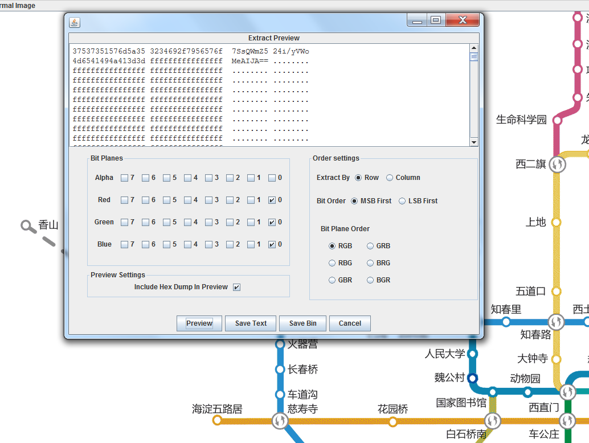

097 北京地铁
题目：Color Threshold 提示:AES ECB密钥为小写字母 提示2:密钥不足位用斜杠0补全 提示3:不要光记得隐写不看图片本身啊
下载得到北京地铁.bmp文件。根据题目提示，用Stegsolve查看LSB隐写。

得到AES加密的密文：
7SsQWmZ524i/yVWoMeAIJA==
然后观察图片发现魏公村站的颜色和其他站不同，尝试密钥weigongcun。

解密得到flag。
from Crypto.Cipher import AES
import base64
aes_instance = AES.new(b'weigongcun'.ljust(16, b'\0'), AES.MODE_ECB)
cipher = base64.b64decode('7SsQWmZ524i/yVWoMeAIJA==')
plaintext = aes_instance.decrypt(cipher)
print(plaintext)
flag：DDCTF{Q*2!x@B0}
098 picture3
下载得到jpg文件。

十六进制编辑器打开，文件末尾有zip压缩包数据。提取后发现有伪加密，ZipCenOp处理一下。解压得到stego.txt：
b2Q5dU==
aDk5Ni==
ZG8wOW==
ZzYxYh==
ZjU4NT==
aXBjNF==
Q3dTM2==
d1Y5c1==
dFA3WV==
ZDNQUP==
ejhBMT==
dUowaW==
OVQ2ZD==
aUM5ZU==
NnFFek==
ZGc0T/==
NGpWNE==
NVZpUW==
ejZDTm==
a1VEN5==
azNMUX==
TXlhNW==
bjZwWm==
Q2Q0b1==
base64隐写，解密得到：
Ba5e_64OFive
flag：flag{Ba5e_64OFive}
099 Keyword
下载得到png格式文件。

尝试发现是带密码的LSB隐写。
root@kali:~/Desktop/lsb# python lsb.py extract 2ec5f2fe4139477781bb61070b8470a6.png flag.txt lovekfc
[+] Image size: 360x245 pixels.
[+] Written extracted data to flag.txt.
得到：
PVSF{vVckHejqBOVX9C1c13GFfkHJrjIQeMwf}
根据题目提示，flag格式为QCTF，试制对应表：
ABCDEFGHIJKLMNOPQRSTUVWXYZ
V F P T
联系到图片给出的keyword，判定对应表为：
ABCDEFGHIJKLMNOPQRSTUVWXYZ
LOVEKFCABDGHIJMNPQRSTUWXYZ
import string
a = 'PVSF{vVckHejqBOVX9C1c13GFfkHJrjIQeMwf}'
b = 'LOVEKFCABDGHIJMNPQRSTUWXY'
flag = ''
for i in a:
if i in string.ascii_lowercase:
index = b.lower().index(i)
flag += string.ascii_lowercase[index]
elif i in string.ascii_uppercase:
index = b.upper().index(i)
flag += string.ascii_uppercase[index]
else:
flag += i
print(flag)
得到flag。
flag：QCTF{cCgeLdnrIBCX9G1g13KFfeLNsnMRdOwf}
100 7-2
下载得到problem文件夹，内含1024个1KB大小的乱码名称文件。

尝试对文件名进行base64解密。
root@kali:~/Desktop/problem# ls | base64 -d

发现唯一的有意义字符串：ainidexinzhuang。找到对应的文件名YWluaWRleGluZ3podWFuZw打开，内容：
00 00 00 00 00 00 00 00 00 00 00 00 00 00 00 00 00 74 94 22 42 91 23 {82 42 82 52 63 21 42 22 73 21 }00 00 00 00 00 00 00 00 00 00 00 00 00 00 00 00
去掉无意义的00：
74 94 22 42 91 23 {82 42 82 52 63 21 42 22 73 21 }
每组两个数字，第一个数字不出现1，第二个数字在1-4间，且仅当第一个数字为7或9时第二个数字可能为4，手机键盘密码：
szbhwc{uhukoahbra}
和wdflag对比一下，应该是移位为4的凯撒密码：
wdflag{ylyoselfve}
flag：wdflag{ylyoselfve}
101 ewm
下载得到all文件夹，内含85张图片，文件名均包含big或small，且内容疑似二维码的一部分。

观察发现big的大小为51x51，small的大小为42x42。且big有36张，small有49张。
很明显需要把big拼成6x6的图片，small拼成7x7的图片。顺序采用图片的最后修改时间。
写脚本拼图片：
from PIL import Image
import os
IMAGES_PATH = 'C:/Users/Administrator/Desktop/all/big/'
IMAGES_FORMAT = ['.jpg']
IMAGE_SIZE = 51
IMAGE_ROW = 6 # 生成图片的行
IMAGE_COLUMN = 6 # 生成图片的列
IMAGE_SAVE_PATH = 'C:/Users/Administrator/Desktop/all/big.jpg' # 结果保存地址
# 按修改时间排序
def sort_file_by_time(file_path):
files = os.listdir(file_path)
if not files:
return
else:
files = sorted(files, key=lambda x: os.path.getmtime(os.path.join(file_path, x)))
return files
image_names = sort_file_by_time(IMAGES_PATH)
print(image_names)
def image_compose():
to_image = Image.new('RGB', (IMAGE_COLUMN * IMAGE_SIZE, IMAGE_ROW * IMAGE_SIZE))
for y in range(1, IMAGE_ROW + 1):
for x in range(1, IMAGE_COLUMN + 1):
from_image = Image.open(IMAGES_PATH + image_names[IMAGE_COLUMN * (y - 1) + x - 1]).resize(
(IMAGE_SIZE, IMAGE_SIZE),Image.ANTIALIAS)
to_image.paste(from_image, ((x - 1) * IMAGE_SIZE, (y - 1) * IMAGE_SIZE))
return to_image.save(IMAGE_SAVE_PATH)
image_compose()
from PIL import Image
import os
IMAGES_PATH = 'C:/Users/Administrator/Desktop/all/small/'
IMAGES_FORMAT = ['.jpg']
IMAGE_SIZE = 42
IMAGE_ROW = 7 # 生成图片的行
IMAGE_COLUMN = 7 # 生成图片的列
IMAGE_SAVE_PATH = 'C:/Users/Administrator/Desktop/all/small.jpg' # 结果保存地址
# 按修改时间排序
def sort_file_by_time(file_path):
files = os.listdir(file_path)
if not files:
return
else:
files = sorted(files, key=lambda x: os.path.getmtime(os.path.join(file_path, x)))
return files
image_names = sort_file_by_time(IMAGES_PATH)
print(image_names)
def image_compose():
to_image = Image.new('RGB', (IMAGE_COLUMN * IMAGE_SIZE, IMAGE_ROW * IMAGE_SIZE))
for y in range(1, IMAGE_ROW + 1):
for x in range(1, IMAGE_COLUMN + 1):
from_image = Image.open(IMAGES_PATH + image_names[IMAGE_COLUMN * (y - 1) + x - 1]).resize(
(IMAGE_SIZE, IMAGE_SIZE),Image.ANTIALIAS)
to_image.paste(from_image, ((x - 1) * IMAGE_SIZE, (y - 1) * IMAGE_SIZE))
return to_image.save(IMAGE_SAVE_PATH)
image_compose()
拼图结果是一样的。扫码得到flag。
flag：flag{g00d_g00d_study_1jf8988}
102 refrain
做不来，抄Writeup：
以下是XCTF提供的机翻：
在这个挑战中，我们得到一个名为 perf.data的gzip文件，以及对环境的最小描述。谷歌搜索显示， perf.data是一种记录格式的perf工具，一个Linux分析器。安装perf允许我们读取 perf.data，并在终端中看到一些非常交互式的统计数据表，描述分析结果，从中我们可以看到一些库和地址被调用，但它们并不能揭示正在发生的事情。 PerfReport-D是一种以更具人类可读性的方式查看更多基础数据（并查看其中有多少数据）的黑客方法，它以ASCII格式转储原始数据，但这仍然没有那么有用。（有人可能希望在这个大文本转储中只为标志 grep，但看不到它。）不过，从这个文件中，我们肯定可以读取运行perf记录所针对的所有确切库版本。
0x6178 [0xa8]: event: 10
.
. ... raw event: size 168 bytes
. 0000: 0a 00 00 00 02 00 a8 00 e7 61 00 00 e7 61 00 00 .........a...a..
. 0010: 00 00 40 00 00 00 00 00 00 10 00 00 00 00 00 00 ..@.............
. 0020: 00 00 00 00 00 00 00 00 fd 00 00 00 00 00 00 00 ................
. 0030: ad 5e 46 00 00 00 00 00 71 95 13 17 00 00 00 00 .^F.....q.......
. 0040: 05 00 00 00 02 18 00 00 2f 75 73 72 2f 6c 69 62 ......../usr/lib
. 0050: 2f 78 38 36 5f 36 34 2d 6c 69 6e 75 78 2d 67 6e /x86_64-linux-gn
. 0060: 75 2f 49 6d 61 67 65 4d 61 67 69 63 6b 2d 36 2e u/ImageMagick-6.
. 0070: 38 2e 39 2f 62 69 6e 2d 51 31 36 2f 63 6f 6e 76 8.9/bin-Q16/conv
. 0080: 65 72 74 00 00 00 00 00 e7 61 00 00 e7 61 00 00 ert......a...a..
. 0090: 43 be 7a 60 88 a8 00 00 00 00 00 00 00 00 00 00 C.z`............
. 00a0: 15 00 00 00 00 00 00 00 ........
另一个有用的命令是perf report--header only，它提供以下功能：
# cmdline : /usr/lib/linux-hwe-tools-4.10.0-42/perf record -e intel_pt// convert -font
Courier text:- image.png
这告诉我们使用perf分析的确切命令： convert-font-courier-text:-image.png 一个 imagemagick命令，从stdin读取文本（可能是标志）并将其呈现为png图像。
至于 perf调用， Intel_pt//bit指的是Intel处理器跟踪，它是内核事件的一个来源，除其他外，它跟踪是否执行了每个条件分支。它的跟踪不会超过这个数量——很多数据实际上只是一个编码序列，表示 TS（“taken”）和 NS（“nottaken”），可以在 perf report-d中看到，但是如果您有与命令使用的完全相同的可执行文件和库，这就足以完美地重建控制流，因为您无法跟踪他组装并随时知道下一个分支指令是什么。我在一台运行Ubuntu18.04的笔记本电脑上做了这个挑战，很快就得出结论，我没有同样的库。幸运的是，我有一个16.04的虚拟机，大部分都有，所以我可以在虚拟机中获得更好的性能报告。我还使用了perf脚本命令，该命令产生至少千兆字节的数据，但会将每个条件分支中涉及的名称和地址尽其所能地以类似这样的数百万行的格式报告，这些行可以被grep通过。
convert 32608 [002] 1659210.049834:
1 branches: 7f794df893e9 strcmp (/lib/x86_64-linux-gnu/ld-2.27.so)
=> 7f794df8a250 strcmp (/lib/x86_64-linux-gnu/ld-2.27.so)
现在，我们需要找出一个地方，在理论上，这些信息允许我们重建由 convert绘制的文本。这并不容易。跟踪只显示条件分支，而不显示任何正在计算或传递的数据的值，而且很多时候不同的字符或不同的像素不会导致不同的控制流；它们将像其他字符或像素值一样传递。在对 ImageMagick源进行了一段时间的挖掘，并在gdb中执行了一些 convert的测试之后，我回到了 FreeType库的调用中，特别是对 FT_glyph_to_bitmap的调用中，这是最有可能导致不同字符产生不同控制流的地方，尽管直到我真正编写代码时我才确定。那就行了。其思想是不同的字形将具有不同的笔画数量，并导致绘制的像素数量不同，这将改变控制流。
然而，即使有了这个想法，也很难通过每个字形的控制流来解释每个字符的重构。这可能需要对跨越数千条装配线的数百个分支之间的细微差异进行推理。相反，我们更愿意让计算机为我们做这项工作，在已知的明文中对相同的库运行相同的 convert命令，并将我们记录的分支模式与那些分支模式进行比较。
不幸的是，虽然我可以在我的虚拟机上阅读性能报告，但我不能让 IntelPT录制在其中工作，这并不奇怪，因为它必须在非常低的水平上与处理器交互才能工作。因此，我最终在我的主机笔记本电脑上找到并强制将 libfreetype6降级为 2.6.1-0.1ubuntu2.3，这与我的虚拟机中的版本完全相同，挑战也被记录在案。这足以让 Perf脚本找到它想要的符号，并让我们对给定记录进行引用记录，使每个字形具有相同的分支行为，至少在 libfreetype6中花费时间。
ASLR意味着在两个地址之间进行分支的地址在运行时不会完全相同，但它仍然会保留地址 mod212，因此只需取所有相关地址的最后三个十六进制数字，就可以得到非常可靠的指纹。
经过大量的探索性grep，我找到了一个我喜欢的条件分支，它出现在某个 0x132FT_Glyph_To_Bitmap上。我在perf脚本中为这一行和后面的一千行添加了grep（因为我假设 grep能够比随意编写的python脚本更有效地读取数百万行），然后用python脚本进行后处理以提取一些分支模式的哈希值，这可以与生成的哈希值进行比较。与给定的性能数据相同。我用一些非常简单的 perf.data进行了测试，结果证实了相同的字母似乎有着相同的指纹（尽管在重复之前和之后，整个文本似乎被渲染了四次，但这并不难被忽略）。
举个例子，这里是记录 flag{aaabbbccddd}转换和后处理的结果，因为所有行都有数千个字符长，所以右侧的行被截断。除了末尾的哈希值之外，这些行看起来是相同的，因为它们直到中有数百个字符才会分开，但是结尾的哈希值让我们很容易看到相同和不同的分支行为。特别是，你可以看到 feb2cf、01c5bc、20a3ce和115279每个重复三次，表明它们分别对应于 glyphs a、b、c和d的渲染。然后您可以确认 feb2cf仅在几行之前重新出现，对应于 a的 flag。整个过程重复了四次，由 75A768包围和分隔，一开始还有一个别的 1C418A，我不确定它的意义，但是由于这些哈希在做题记录的指纹中出现在相同的位置，我们不必担心它们
1c418a 132FTGTB 833FTRGI 8b2FTRGI 845FTRGI 875FTRGI f9d fd8 fcc
75a768 132FTGTB 833FTRGI 8b2FTRGI 845FTRGI 875FTRGI f9d fd8 fcc
43dffc 132FTGTB 833FTRGI 8b2FTRGI 845FTRGI 875FTRGI f9d fd8 fcc
92c2d1 132FTGTB 833FTRGI 8b2FTRGI 845FTRGI 875FTRGI f9d fd8 fcc
feb2cf 132FTGTB 833FTRGI 8b2FTRGI 845FTRGI 875FTRGI f9d fd8 fcc
6db238 132FTGTB 833FTRGI 8b2FTRGI 845FTRGI 875FTRGI f9d fd8 fcc
215a7d 132FTGTB 833FTRGI 8b2FTRGI 845FTRGI 875FTRGI f9d fd8 fcc
feb2cf 132FTGTB 833FTRGI 8b2FTRGI 845FTRGI 875FTRGI f9d fd8 fcc
feb2cf 132FTGTB 833FTRGI 8b2FTRGI 845FTRGI 875FTRGI f9d fd8 fcc
feb2cf 132FTGTB 833FTRGI 8b2FTRGI 845FTRGI 875FTRGI f9d fd8 fcc
01c5bc 132FTGTB 833FTRGI 8b2FTRGI 845FTRGI 875FTRGI f9d fd8 fcc
01c5bc 132FTGTB 833FTRGI 8b2FTRGI 845FTRGI 875FTRGI f9d fd8 fcc
01c5bc 132FTGTB 833FTRGI 8b2FTRGI 845FTRGI 875FTRGI f9d fd8 fcc
20a3ce 132FTGTB 833FTRGI 8b2FTRGI 845FTRGI 875FTRGI f9d fd8 fcc
20a3ce 132FTGTB 833FTRGI 8b2FTRGI 845FTRGI 875FTRGI f9d fd8 fcc
20a3ce 132FTGTB 833FTRGI 8b2FTRGI 845FTRGI 875FTRGI f9d fd8 fcc
115279 132FTGTB 833FTRGI 8b2FTRGI 845FTRGI 875FTRGI f9d fd8 fcc
115279 132FTGTB 833FTRGI 8b2FTRGI 845FTRGI 875FTRGI f9d fd8 fcc
115279 132FTGTB 833FTRGI 8b2FTRGI 845FTRGI 875FTRGI f9d fd8 fcc
215a7d 132FTGTB 833FTRGI 8b2FTRGI 845FTRGI 875FTRGI f9d fd8 fcc
75a768 132FTGTB 833FTRGI 8b2FTRGI 845FTRGI 875FTRGI f9d fd8 fcc
43dffc 132FTGTB 833FTRGI 8b2FTRGI 845FTRGI 875FTRGI f9d fd8 fcc
92c2d1 132FTGTB 833FTRGI 8b2FTRGI 845FTRGI 875FTRGI f9d fd8 fcc
feb2cf 132FTGTB 833FTRGI 8b2FTRGI 845FTRGI 875FTRGI f9d fd8 fcc
6db238 132FTGTB 833FTRGI 8b2FTRGI 845FTRGI 875FTRGI f9d fd8 fcc
215a7d 132FTGTB 833FTRGI 8b2FTRGI 845FTRGI 875FTRGI f9d fd8 fcc
feb2cf 132FTGTB 833FTRGI 8b2FTRGI 845FTRGI 875FTRGI f9d fd8 fcc
feb2cf 132FTGTB 833FTRGI 8b2FTRGI 845FTRGI 875FTRGI f9d fd8 fcc
feb2cf 132FTGTB 833FTRGI 8b2FTRGI 845FTRGI 875FTRGI f9d fd8 fcc
01c5bc 132FTGTB 833FTRGI 8b2FTRGI 845FTRGI 875FTRGI f9d fd8 fcc
01c5bc 132FTGTB 833FTRGI 8b2FTRGI 845FTRGI 875FTRGI f9d fd8 fcc
01c5bc 132FTGTB 833FTRGI 8b2FTRGI 845FTRGI 875FTRGI f9d fd8 fcc
20a3ce 132FTGTB 833FTRGI 8b2FTRGI 845FTRGI 875FTRGI f9d fd8 fcc
20a3ce 132FTGTB 833FTRGI 8b2FTRGI 845FTRGI 875FTRGI f9d fd8 fcc
20a3ce 132FTGTB 833FTRGI 8b2FTRGI 845FTRGI 875FTRGI f9d fd8 fcc
115279 132FTGTB 833FTRGI 8b2FTRGI 845FTRGI 875FTRGI f9d fd8 fcc
115279 132FTGTB 833FTRGI 8b2FTRGI 845FTRGI 875FTRGI f9d fd8 fcc
115279 132FTGTB 833FTRGI 8b2FTRGI 845FTRGI 875FTRGI f9d fd8 fcc
215a7d 132FTGTB 833FTRGI 8b2FTRGI 845FTRGI 875FTRGI f9d fd8 fcc
75a768 132FTGTB 833FTRGI 8b2FTRGI 845FTRGI 875FTRGI f9d fd8 fcc
43dffc 132FTGTB 833FTRGI 8b2FTRGI 845FTRGI 875FTRGI f9d fd8 fcc
92c2d1 132FTGTB 833FTRGI 8b2FTRGI 845FTRGI 875FTRGI f9d fd8 fcc
feb2cf 132FTGTB 833FTRGI 8b2FTRGI 845FTRGI 875FTRGI f9d fd8 fcc
6db238 132FTGTB 833FTRGI 8b2FTRGI 845FTRGI 875FTRGI f9d fd8 fcc
215a7d 132FTGTB 833FTRGI 8b2FTRGI 845FTRGI 875FTRGI f9d fd8 fcc
feb2cf 132FTGTB 833FTRGI 8b2FTRGI 845FTRGI 875FTRGI f9d fd8 fcc
feb2cf 132FTGTB 833FTRGI 8b2FTRGI 845FTRGI 875FTRGI f9d fd8 fcc
feb2cf 132FTGTB 833FTRGI 8b2FTRGI 845FTRGI 875FTRGI f9d fd8 fcc
01c5bc 132FTGTB 833FTRGI 8b2FTRGI 845FTRGI 875FTRGI f9d fd8 fcc
01c5bc 132FTGTB 833FTRGI 8b2FTRGI 845FTRGI 875FTRGI f9d fd8 fcc
01c5bc 132FTGTB 833FTRGI 8b2FTRGI 845FTRGI 875FTRGI f9d fd8 fcc
20a3ce 132FTGTB 833FTRGI 8b2FTRGI 845FTRGI 875FTRGI f9d fd8 fcc
20a3ce 132FTGTB 833FTRGI 8b2FTRGI 845FTRGI 875FTRGI f9d fd8 fcc
20a3ce 132FTGTB 833FTRGI 8b2FTRGI 845FTRGI 875FTRGI f9d fd8 fcc
115279 132FTGTB 833FTRGI 8b2FTRGI 845FTRGI 875FTRGI f9d fd8 fcc
115279 132FTGTB 833FTRGI 8b2FTRGI 845FTRGI 875FTRGI f9d fd8 fcc
115279 132FTGTB 833FTRGI 8b2FTRGI 845FTRGI 875FTRGI f9d fd8 fcc
215a7d 132FTGTB 833FTRGI 8b2FTRGI 845FTRGI 875FTRGI f9d fd8 fcc
75a768 132FTGTB 833FTRGI 8b2FTRGI 845FTRGI 875FTRGI f9d fd8 fcc
43dffc 132FTGTB 833FTRGI 8b2FTRGI 845FTRGI 875FTRGI f9d fd8 fcc
92c2d1 132FTGTB 833FTRGI 8b2FTRGI 845FTRGI 875FTRGI f9d fd8 fcc
feb2cf 132FTGTB 833FTRGI 8b2FTRGI 845FTRGI 875FTRGI f9d fd8 fcc
6db238 132FTGTB 833FTRGI 8b2FTRGI 845FTRGI 875FTRGI f9d fd8 fcc
215a7d 132FTGTB 833FTRGI 8b2FTRGI 845FTRGI 875FTRGI f9d fd8 fcc
feb2cf 132FTGTB 833FTRGI 8b2FTRGI 845FTRGI 875FTRGI f9d fd8 fcc
feb2cf 132FTGTB 833FTRGI 8b2FTRGI 845FTRGI 875FTRGI f9d fd8 fcc
feb2cf 132FTGTB 833FTRGI 8b2FTRGI 845FTRGI 875FTRGI f9d fd8 fcc
01c5bc 132FTGTB 833FTRGI 8b2FTRGI 845FTRGI 875FTRGI f9d fd8 fcc
01c5bc 132FTGTB 833FTRGI 8b2FTRGI 845FTRGI 875FTRGI f9d fd8 fcc
01c5bc 132FTGTB 833FTRGI 8b2FTRGI 845FTRGI 875FTRGI f9d fd8 fcc
20a3ce 132FTGTB 833FTRGI 8b2FTRGI 845FTRGI 875FTRGI f9d fd8 fcc
20a3ce 132FTGTB 833FTRGI 8b2FTRGI 845FTRGI 875FTRGI f9d fd8 fcc
20a3ce 132FTGTB 833FTRGI 8b2FTRGI 845FTRGI 875FTRGI f9d fd8 fcc
115279 132FTGTB 833FTRGI 8b2FTRGI 845FTRGI 875FTRGI f9d fd8 fcc
115279 132FTGTB 833FTRGI 8b2FTRGI 845FTRGI 875FTRGI f9d fd8 fcc
115279 132FTGTB 833FTRGI 8b2FTRGI 845FTRGI 875FTRGI f9d fd8 fcc
215a7d 132FTGTB 833FTRGI 8b2FTRGI 845FTRGI 875FTRGI f9d fd8 fcc
75a768 132FTGTB 833FTRGI 8b2FTRGI 845FTRGI 875FTRGI f9d fd8 fcc
然后我记录了一个这样的 perf.data（数字是三倍的，如上所述，很容易注意到重复哈希值的三倍和稍微错误的正确位置）：
echo 'flag{abcdefghijklmnopqrstuvwxyz000111222333444555666777888999}'
sudo perf record -e intel_pt// convert -font Courier text:- image.png
这将在每个分支后的接下来几行中生成一个 0x132FT_Glyph_To_Bitmap。
perf script -i perf.data | grep "132 FT_Glyph_To_Bitmap" -A 1000 | python3 post1000.py > pout
在最后一步中用于生成所有上述文本转储的post1000.py脚本是以下非常简单的片段，对于从 0x132FT_Glyph_To_Bitmap的每个分支，它提取 mod-212地址以及完全在libfreetype中着陆的下一对分支的一些大写字母，希望人工检查将如果出了问题，可以恢复一些信息，然后对结果进行哈希值以便比较。没出什么问题，所以剩下的线没关系。（我们不希望超出libfreetype的分支是正在绘制的字母或glyph的确定函数-例如，如果libfreetype必须对任何内存进行malloc，则 malloc中的控制流可能会混乱地依赖于先前在不同glyph或处理的不同部分上发生的各种分配。出于同样的原因，我们不希望在libfreetype控制流中每个分支 0x132FT_Glyph_To_Bitmap后的1000个分支都停止在完全相同的位置，因此我们只弄乱随便一个前缀。）
import sys
import hashlib
def show(buf):
s = ' '.join(buf)
print(hashlib.sha256(s[:1000].encode('utf-8')).hexdigest()[:6] + ' ' + s)
line_buf = []
for line in sys.stdin:
if "branches:" in line:
_, rest = line.split("branches:")
if "132 FT_Glyph_To_Bitmap" in rest and line_buf:
show(line_buf)
line_buf = []
if rest.count("libfreetype") >= 2:
tok1, tok2, *_ = rest.split()
line_buf.append(tok1[-3:] + ''.join(c for c in tok2 if c.isupper()))
if line_buf:
show(line_buf)
在这之后，我不再费心编写提取flag的脚本，只花了几分钟的时间手动比较从challenge perf.data生成的哈希与从已知的纯文本perf.data生成的哈希，并在vim中逐个标记flag的字符。最后生成flag。
flag：flag{1df9e1d99ff7ea50bbe782492430b223}